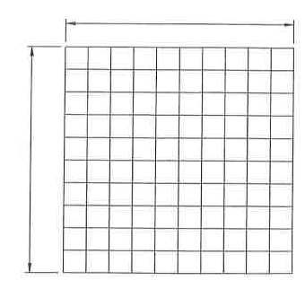

Choose a grid shape :
Square grid without ground rods
Square grid with ground rods
Rectangular grid with ground rods
L-shaped grid with ground rods
submit

Design Data:
Fault Duraton (t
f
) =
s
Positive sequence equivanent system impedance (Z
1
) [HV Side] =
Ω + j⋅
Ω
Zero sequence equivanent system impedance (Z
0
) [HV Side] =
Ω +j⋅
Ω
Current division factor (S
f
) =
Line to line voltage at worst-fault condition =
Volts
Soil resistivity (ρ) =
Ω⋅m
Crushed rock resistivity (ρ
s
) =
Ω⋅m
Thickness of crushed rock surfacing (h
s
) =
m
Depth of grid burial (h) =
m
Available grounding area (A) =
sq. m
Transformer impendance (LV Side) =
Ω + j⋅
Ω
Choose conductor material :
Copper, annealed soft-drawn
Copper, commercial hard-drawn
Copper clad steel wire (conductivity 40%)
Copper clad steel wire (conductivity 30%)
Copper-clad steel rod
Aluminum-clad steel wire
Steel 1020
Stainless-clad steel rod
Zinc-coated steel rod
Stainless steel 304
Touch and Step Criteria
Reflection Factor (K = (ρ-ρ
s
)/(ρ+ρ
s
)) =
Reduction Factor (C
s
) =